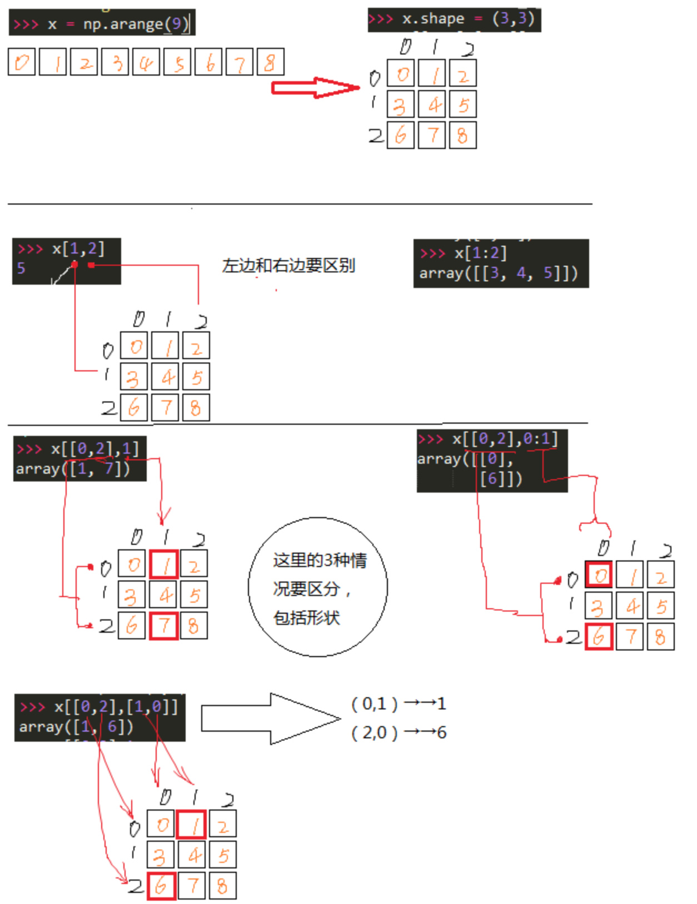

Numpy高维数组连续切片
Numpy高维数组连续切片
先回顾一下基础：
创建数组：一般5种方式创建数组
1. 从其他python结构转变，如列表，元祖
1 | x = np.array([2,3,1,0]) |
2. numpy内置的方式创建，如arange，ones，zeros，
1 | np.arange(10) |
3.从磁盘的标准格式或定制格式
4.从使用了字符串或缓存的原始数据创建数组
这里用到了genfromtxt()函数，而且还要导入StringIO，内容好像蛮多的，得单独整理
5.使用专门库的函数创建，如random
数组的索引
1 | x = np.arange(10) |
下面是正题：
多维数组的索引
先拿出来自己的例子：
1 | # scatGaAs[3, :, 2] |
乱七八糟的，还是画图吧

1 | y[np.array([0,2,4]), np.array([0,1,2])]#这里的y就是上面创建的5*7的二维数组，这里可以理解成x坐标0,2,4，y坐标0,1,2的三个数 |
布尔类型的索引
1 | b = y>20 |
再拿出来官方文档：
Basic Slicing and Indexing
Basic slicing extends Python’s basic concept of slicing to N dimensions. Basic slicing occurs when obj is a slice object (constructed by start:stop:step notation inside of brackets), an integer, or a tuple of slice objects and integers. Ellipsis and newaxis objects can be interspersed with these as well. In order to remain backward compatible with a common usage in Numeric, basic slicing is also initiated if the selection object is any non-ndarray sequence (such as a list) containing slice objects, the Ellipsis object, or the newaxis object, but not for integer arrays or other embedded sequences.
All arrays generated by basic slicing are always views of the original array.
The standard rules of sequence slicing apply to basic slicing on a per-dimension basis (including using a step index). Some useful concepts to remember include:
-
The basic slice syntax is
i:j:kwhere i is the starting index, j is the stopping index, and k is the step. This selects the m elements (in the corresponding dimension) with index values i, i + k, …, i + (m - 1) k where and q and r are the quotient and remainder obtained by dividing j - i by k: j - i = q k + r, so that i + (m - 1) k < j.Example
1
2
3x = np.array([0, 1, 2, 3, 4, 5, 6, 7, 8, 9])
x[1:7:2]
array([1, 3, 5]) -
Negative i and j are interpreted as n + i and n + j where n is the number of elements in the corresponding dimension. Negative k makes stepping go towards smaller indices.
Example
1
2
3
4x[-2:10]
array([8, 9])
x[-3:3:-1]
array([7, 6, 5, 4]) -
Assume n is the number of elements in the dimension being sliced. Then, if i is not given it defaults to 0 for k > 0 and n - 1 for k < 0 . If j is not given it defaults to n for k > 0 and -n-1 for k < 0 . If k is not given it defaults to 1. Note that
::is the same as:and means select all indices along this axis.Example
1
2x[5:]
array([5, 6, 7, 8, 9]) -
If the number of objects in the selection tuple is less than N , then
:is assumed for any subsequent dimensions.Example
1
2
3
4
5
6
7x = np.array([[[1],[2],[3]], [[4],[5],[6]]])
x.shape
(2, 3, 1)
x[1:2]
array([[[4],
[5],
[6]]]) -
Ellipsisexpand to the number of:objects needed to make a selection tuple of the same length asx.ndim. There may only be a single ellipsis present.Example
1
2
3x[...,0]
array([[1, 2, 3],
[4, 5, 6]]) -
Each
newaxisobject in the selection tuple serves to expand the dimensions of the resulting selection by one unit-length dimension. The added dimension is the position of thenewaxisobject in the selection tuple.Example
1
2x[:,np.newaxis,:,:].shape
(2, 1, 3, 1) -
An integer, i, returns the same values as
i:i+1except the dimensionality of the returned object is reduced by 1. In particular, a selection tuple with the p-th element an integer (and all other entries:) returns the corresponding sub-array with dimension N - 1. If N = 1 then the returned object is an array scalar. These objects are explained in Scalars. -
If the selection tuple has all entries
:except the p-th entry which is a slice objecti:j:k, then the returned array has dimension N formed by concatenating the sub-arrays returned by integer indexing of elements i, i+k, …, i + (m - 1) k < j, -
Basic slicing with more than one non-
:entry in the slicing tuple, acts like repeated application of slicing using a single non-:entry, where the non-:entries are successively taken (with all other non-:entries replaced by:). Thus,x[ind1,...,ind2,:]acts likex[ind1][...,ind2,:]under basic slicing.Warning
The above is not true for advanced indexing.
-
You may use slicing to set values in the array, but (unlike lists) you can never grow the array. The size of the value to be set in
x[obj] = valuemust be (broadcastable) to the same shape asx[obj].
Note
Remember that a slicing tuple can always be constructed as obj and used in the x[obj] notation. Slice objects can be used in the construction in place of the [start:stop:step] notation. For example, x[1:10:5,::-1] can also be implemented as obj = (slice(1,10,5), slice(None,None,-1)); x[obj] . This can be useful for constructing generic code that works on arrays of arbitrary dimension.
-
numpy.``newaxisThe
newaxisobject can be used in all slicing operations to create an axis of length one.newaxisis an alias for ‘None’, and ‘None’ can be used in place of this with the same result.
Advanced Indexing
Advanced indexing is triggered when the selection object, obj, is a non-tuple sequence object, an ndarray (of data type integer or bool), or a tuple with at least one sequence object or ndarray (of data type integer or bool). There are two types of advanced indexing: integer and Boolean.
Advanced indexing always returns a copy of the data (contrast with basic slicing that returns a view).
Warning
The definition of advanced indexing means that x[(1,2,3),] is fundamentally different than x[(1,2,3)]. The latter is equivalent to x[1,2,3] which will trigger basic selection while the former will trigger advanced indexing. Be sure to understand why this occurs.
Also recognize that x[[1,2,3]] will trigger advanced indexing, whereas x[[1,2,slice(None)]] will trigger basic slicing.
Integer array indexing
Integer array indexing allows selection of arbitrary items in the array based on their N-dimensional index. Each integer array represents a number of indexes into that dimension.
Purely integer array indexing
When the index consists of as many integer arrays as the array being indexed has dimensions, the indexing is straight forward, but different from slicing.
Advanced indexes always are broadcast and iterated as one:
1 | result[i_1, ..., i_M] == x[ind_1[i_1, ..., i_M], ind_2[i_1, ..., i_M], |
Note that the result shape is identical to the (broadcast) indexing array shapes ind_1, ..., ind_N.
Example
From each row, a specific element should be selected. The row index is just [0, 1, 2] and the column index specifies the element to choose for the corresponding row, here [0, 1, 0]. Using both together the task can be solved using advanced indexing:
1 | x = np.array([[1, 2], [3, 4], [5, 6]]) |
To achieve a behaviour similar to the basic slicing above, broadcasting can be used. The function ix_ can help with this broadcasting. This is best understood with an example.
Example
From a 4x3 array the corner elements should be selected using advanced indexing. Thus all elements for which the column is one of [0, 2]and the row is one of [0, 3] need to be selected. To use advanced indexing one needs to select all elements explicitly. Using the method explained previously one could write:
1 | x = array([[ 0, 1, 2], |
However, since the indexing arrays above just repeat themselves, broadcasting can be used (compare operations such asrows[:, np.newaxis] + columns) to simplify this:
1 | rows = np.array([0, 3], dtype=np.intp) |
This broadcasting can also be achieved using the function ix_:
1 | x[np.ix_(rows, columns)] |
Note that without the np.ix_ call, only the diagonal elements would be selected, as was used in the previous example. This difference is the most important thing to remember about indexing with multiple advanced indexes.
Combining advanced and basic indexing
When there is at least one slice (:), ellipsis (...) or np.newaxis in the index (or the array has more dimensions than there are advanced indexes), then the behaviour can be more complicated. It is like concatenating the indexing result for each advanced index element
In the simplest case, there is only a single advanced index. A single advanced index can for example replace a slice and the result array will be the same, however, it is a copy and may have a different memory layout. A slice is preferable when it is possible.
Example
1 | x[1:2, 1:3] |
The easiest way to understand the situation may be to think in terms of the result shape. There are two parts to the indexing operation, the subspace defined by the basic indexing (excluding integers) and the subspace from the advanced indexing part. Two cases of index combination need to be distinguished:
- The advanced indexes are separated by a slice, ellipsis or newaxis. For example
x[arr1, :, arr2]. - The advanced indexes are all next to each other. For example
x[..., arr1, arr2, :]but notx[arr1, :, 1]since1is an advanced index in this regard.
In the first case, the dimensions resulting from the advanced indexing operation come first in the result array, and the subspace dimensions after that. In the second case, the dimensions from the advanced indexing operations are inserted into the result array at the same spot as they were in the initial array (the latter logic is what makes simple advanced indexing behave just like slicing).
Example
Suppose x.shape is (10,20,30) and ind is a (2,3,4)-shaped indexing intp array, then result = x[...,ind,:] has shape (10,2,3,4,30) because the (20,)-shaped subspace has been replaced with a (2,3,4)-shaped broadcasted indexing subspace. If we let i, j, k loop over the (2,3,4)-shaped subspace then result[...,i,j,k,:] = x[...,ind[i,j,k],:]. This example produces the same result as x.take(ind, axis=-2).
Example
Let x.shape be (10,20,30,40,50) and suppose ind_1 and ind_2 can be broadcast to the shape (2,3,4). Then x[:,ind_1,ind_2] has shape (10,2,3,4,40,50) because the (20,30)-shaped subspace from X has been replaced with the (2,3,4) subspace from the indices. However,x[:,ind_1,:,ind_2] has shape (2,3,4,10,30,50) because there is no unambiguous place to drop in the indexing subspace, thus it is tacked-on to the beginning. It is always possible to use .transpose() to move the subspace anywhere desired. Note that this example cannot be replicated using take.